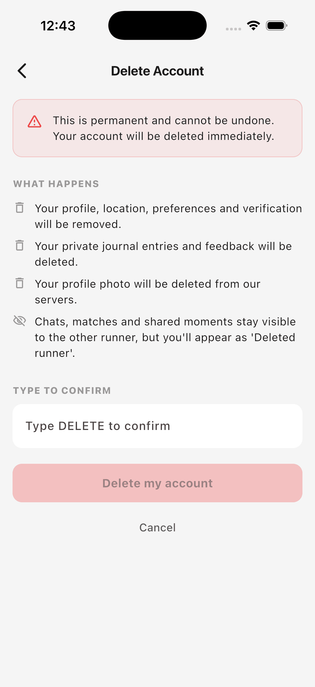
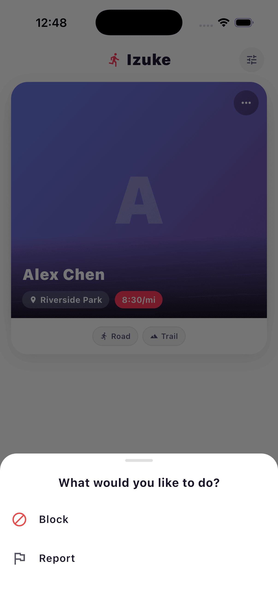
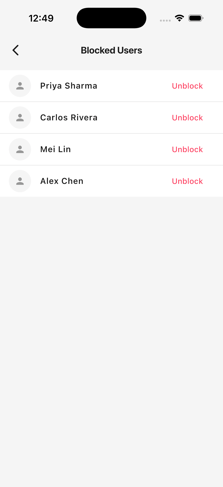

Looking for something specific? This page explains how to manage your Izuke account — including how to delete it, how to block or report another runner, and how to get help if you can't access the app.
You can delete your Izuke account at any time. Deletion is permanent and immediate.
DELETE in the confirmation field.
You'll be signed out automatically and we'll send a confirmation email to the address registered to your account.
We split your data into two categories: data that's yours alone, which we delete forever, and data that involves another runner, which we keep but anonymize so the other person isn't left with a broken chat history.
| Deleted forever | Anonymized (kept) |
|---|---|
| Your name, bio, photo, location, run preferences, verification status | Chats with other runners — they keep the conversation history, but you appear as Deleted runner |
| Your private journal entries (solo runs you logged) | Match records (run requests) — preserved on the other runner's side |
| Feedback you submitted to us | Shared moments (cards from runs you completed together) — kept in the other runner's journal |
| Notifications addressed to you | |
| Planned runs you organized | |
| Your authentication record (you can't log back in) |
Anonymization means we strip your name, photo and any other personally identifying information from records that were shared with another runner — only the run details (distance, pace, date) remain, attached to a placeholder "Deleted runner" identity.
If you've lost your phone or can't log in, you can request deletion by email.
For your safety, we cannot honor deletion requests sent from a different email address than the one on your account. If you've lost access to that email too, please contact us and explain — we may be able to verify your identity another way.
You can block or report any runner you encounter on Izuke from three places: their card in Discover, their full profile page, or your chat with them.

Blocking hides the runner from your Discover deck and your Matches list. They also won't see you in theirs, and they won't be able to message you. Blocking is reversible — you can unblock at any time.
Reporting flags the runner to our team for review. Pick a category, optionally add details, and submit. Reporting also blocks the runner automatically — you don't need to do both.
Categories you can choose from:
We review every report. We may follow up with you for clarification, and we take action — including suspending or removing accounts — when reports are substantiated.

Once unblocked, the runner can appear in your Discover deck again, and you can both message each other if you re-match.
We read every message.